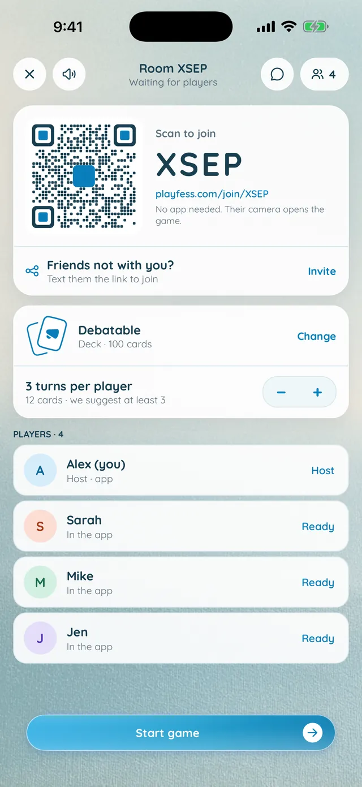
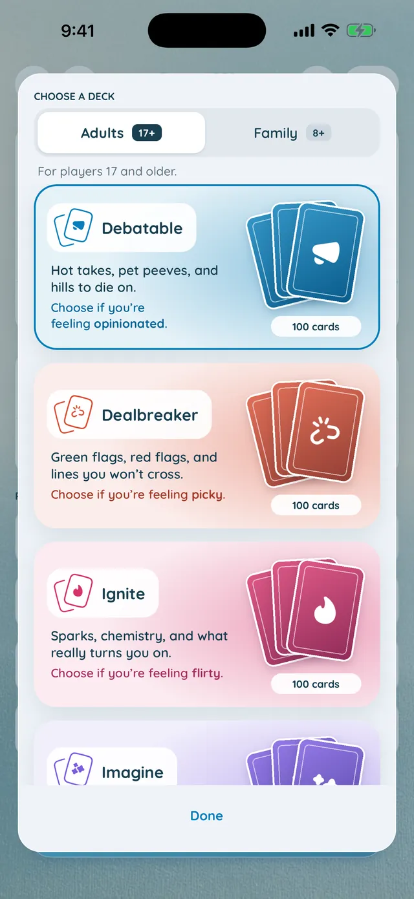
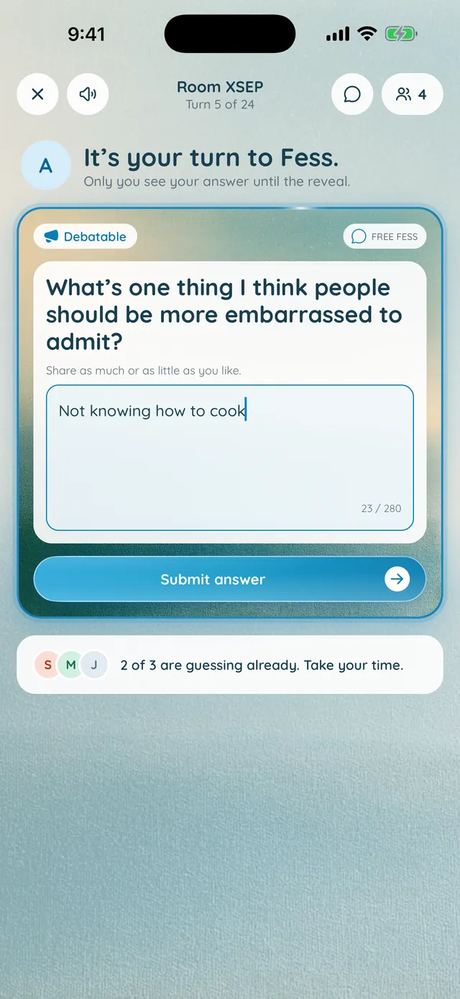
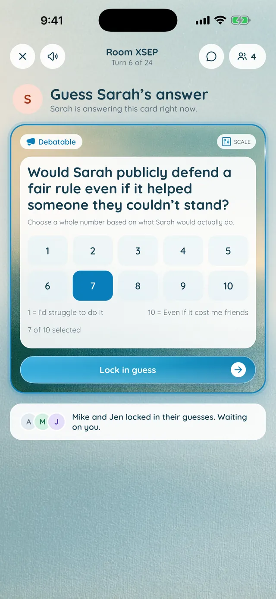
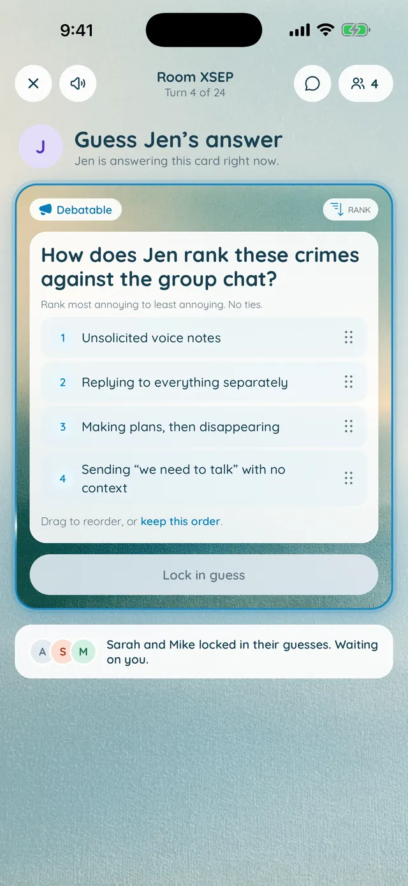
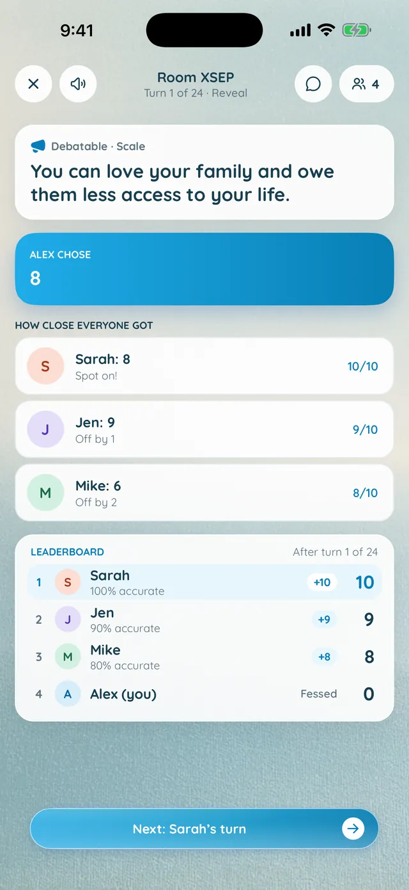
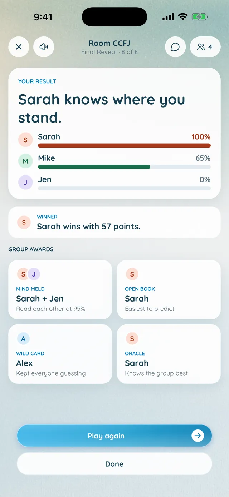

Start a game
Only the host needs the app
Start a game and a QR code appears. Friends scan it or type the 4-letter room code at playfess.com, then play in their phone's browser. No download, no account, no passing a phone around.

One player answers a card in secret. Everyone else guesses on their own phone. Then the truth comes out, scores and all, and the Final Reveal shows who knows whom best. Only the host needs the app: friends can play for free using the app or can join from their browser with a QR code.
Fess is a party game for phones, built around one question. Each turn, one player answers a card in secret. Everyone else predicts the answer, the guesses are scored, and the reveal shows who was close and who has been guessing wrong for years.
Across the game, Fess tracks how well each player reads every other player, in both directions. You might read Sam perfectly while Sam has no idea about you. The Final Reveal puts it all on screen.

Start a game
Start a game and a QR code appears. Friends scan it or type the 4-letter room code at playfess.com, then play in their phone's browser. No download, no account, no passing a phone around.

Decks
The host chooses the deck in the lobby. Switch between adult decks and family decks made for kids 8 and up, and pick the one that fits the mood of the room.

Your turn
When your phone says "It's your turn to Fess," answer the card privately. Nobody else sees your answer until the reveal.

Everyone else
Everyone else sees the same card on their own phone and predicts the answer. The room shows who has locked in a guess and who everyone is waiting on.

Six question styles
Questions come as open answers, fill in the blank, 1 to 10 scales, multiple choice, rankings and "who here" picks, so every turn plays a little differently.

The reveal
The reveal shows the answer, every guess and every score, each with a short verdict. Scales and rankings score by how close you got. When the players allow it, AI judges written answers on meaning, so the right idea in different words still scores.

The Final Reveal
At the end, everyone sees how well each friend knows them, as a percentage. It runs both ways, and not always evenly. With 3 or more players and at least two turns each, group awards go to the Mind Meld, the Open Book, the Wild Card and the Oracle.
Choose a deck in the lobby. Adult decks run from hot takes and pet peeves to green flags, red flags and the things you don't usually say out loud. Family decks keep it light for game night with kids 8 and up.
The host sets how many turns each player gets, so everyone answers the same number of cards. Three each is a good start.
Play again in the same room and the results add up across every game that night, so the picture of who knows whom gets sharper.
Not in the same room? Share the invite link and friends join from wherever they are, each on their own phone.
With the app, your phone buzzes when it's your turn or the room is waiting on you, and short sounds mark each moment. A speaker button mutes them.
Room chat is one tap away in every game, for the commentary while everyone guesses.
One player answers a card in secret on their phone. Everyone else predicts the answer on their own phone. Guesses are scored out of 10, the reveal shows every answer and score, and the turn passes to the next player. At the end, the Final Reveal shows who knows whom best.
2 to 10 players. The group awards in the Final Reveal need 3 or more players with at least two turns each.
No. Only the host needs the app, on iPhone or Android. Friends scan the game's QR code or type the 4-letter room code at playfess.com and play in their phone's browser, with no account. Players with the app also get a buzz when it's their turn.
Yes. Share the room's invite link and friends join from wherever they are. Everyone plays on their own phone, so it works over a video call too.
Both. The adult decks get personal, with some grown-up themes but nothing explicit. The family decks are made for kids 8 and up. The host chooses the deck in the lobby.
Every guess scores out of 10. Multiple choice and "who here" picks score on an exact match, and scales and rankings score by how close you got. Written answers are judged on meaning by AI when the players allow it, so the right idea in different words still scores. Otherwise they're matched word by word.
Only to score written answers, and only with permission. Each player is asked once. If the player who answered allowed it, their answer and the guesses of players who also allowed it go to Anthropic's Claude for scoring, with no names attached. Everything else is scored by Fess itself.
Nobody, until the reveal. Your answer stays off everyone else's phone until the whole room sees it, along with every guess and score.
The host decides. Each player gets the same number of turns, and three each is a good start: with 4 players, that's 12 cards.
The app runs on iPhone with iOS 16.4 or later and on Android 7.0 or later. Friends who join in the browser can play on almost any phone with an up-to-date browser.
Get Fess on iPhone or Android, start a game, and let your friends join from their browser.


 Airline ArchitectBuild a global airline from one jet across 469 real airports.
Airline ArchitectBuild a global airline from one jet across 469 real airports.
 FC ArchitectFound a football club and climb a real European league pyramid.
FC ArchitectFound a football club and climb a real European league pyramid.
 Vineyard ArchitectPlant a vineyard on real terroir, then grow an estate empire.
Vineyard ArchitectPlant a vineyard on real terroir, then grow an estate empire.
 FruitionThe goal app with an honest plan and a coach that adapts to your progress.
FruitionThe goal app with an honest plan and a coach that adapts to your progress.